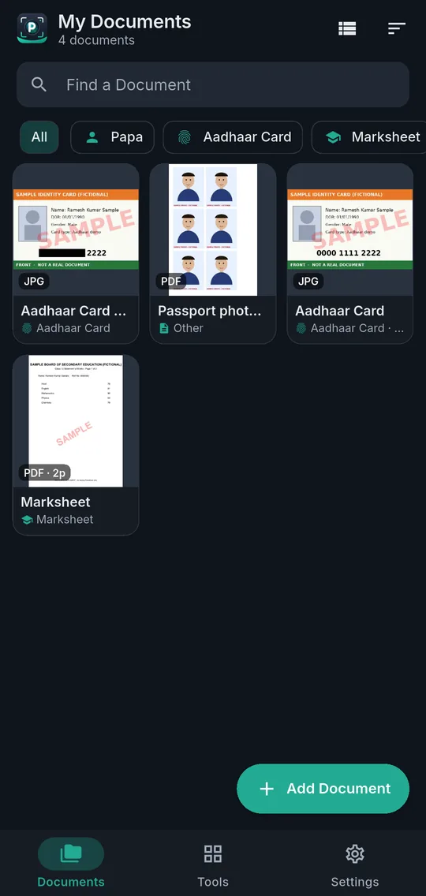

Everything PatraScan can do
A complete walk-through: adding documents, every tool, keeping them safe and moving to a new phone. Version 1.0.0 · Android 7.0+
Install
PatraScan is in early access on Google Play.
- On your phone or computer, open the early-access page while signed in with the Google account you were invited with.
- Tap Become a tester.
- Open PatraScan on Google Play and tap Install. If you don’t see it yet, wait a few minutes and try again.
First run

- Pick a language — हिंदी or English. You can switch any time in Settings.
- Tap Add Document on the home screen.
- That’s it. There’s no account to create. Everything you add is stored encrypted on the phone straight away.
The app has three tabs: Documents (your vault), Tools (every tool in one grid) and Settings.
Add documents
| Way | Best for |
|---|---|
| Smart scan | Paper documents. The camera finds the page edges, captures automatically and fixes the perspective. Scan several pages in a row. |
| ID card | Cards with two sides — Aadhaar, PAN, licence. Scan front and back; they’re placed on one page like a photocopy. |
| Photos to PDF | Photos already in your gallery. Pick several and they become one PDF. |
| Add from phone | A PDF or photo already saved on the phone (Downloads, WhatsApp files and so on). |
After adding, give the document a name (a dated name is suggested), pick its type — Aadhaar, PAN, Passport, Driving licence, Marksheet, Passport photo or Other — and optionally whose it is.
Check pages
Every scan opens the Check pages screen before saving:
- Crop — drag the corners; the page is straightened automatically.
- Filter — Original, Auto, Magic colour, Lighten, Grey or B&W, with brightness and contrast. Tick Apply to all pages to use it everywhere.
- Rotate, Retake, Delete a page.
- Press and drag a page to change the order. Add more pages with the camera or from the gallery.
- Choose the PDF page size — A4, Letter or Fit to photo — then Save as PDF.
Organise & find
- Search by name, type, family member or the words inside a document. Hindi and English both work, and small spelling mistakes are forgiven (आधार / Aadhaar / Aadhar).
- Filter chips under the search bar show one person or one document type.
- Family folders — set “whose document” to keep Papa’s, Maa’s and the kids’ papers apart.
- Expiry reminders — add a valid-till date to a passport or licence and get a notification before it expires. Cards show “Expires in N days”.
- Pin the ones you use most; switch between grid and list and sort by date, name, type or size.
- Long-press to select several documents, then share, merge or delete them together.
Inside a document
Open any document to view it full screen (pinch to zoom, swipe between pages). The strip at the bottom holds the tools for that document, and Share lets you choose what to send — the document as it is, or a photo turned into a PDF. For a smaller file, use Compress first.
All tools
| Tool | What it does |
|---|---|
| Merge into one PDF | Combine several documents, in the order you pick. |
| Manage pages | Reorder, rotate, delete, extract or add pages of a PDF. |
| Compress | Light, Medium or Strong — or a target: under 500, 200, 100 or 50 KB. If a target can’t be reached, you get the smallest result and a note. |
| Password protect | The PDF asks for a password when opened anywhere. |
| Export as JPG | One picture per page. |
| Convert to Word | Turn a PDF into an editable Word (DOCX) file. |
| Sign | Draw your signature once (it’s saved, encrypted) and place it anywhere on a page. |
| Mark up | Pen, highlighter, text and white-out — plus Hide boxes that remove text for good. |
| Watermark | Repeat a line like “Only for bank KYC · 18 Nov 2026” across every page. |
| Extract text (OCR) | Read the text on a page — Hindi and English — and copy or share it. |
| Read QR / barcode | From the camera, a gallery photo or a saved document; includes Aadhaar Secure QR. |
| Masked Aadhaar | Hide the first 8 digits of the Aadhaar number. |
| Passport photo sheet | 35×45 mm photos laid out for 4×6 inch or A4 printing. |
| Form photo | Photo and signature resized to exam and government form rules. |
Long-press a tool on the Tools tab to see what it does.
Preview & share
Tools that change how a page looks — Sign, Watermark, Mark up, Masked Aadhaar and the photo tools — open a full-screen Preview first. Check every page, then:
- Share sends it through Android’s share sheet (WhatsApp, email, Drive…).
- Save keeps it in PatraScan — as a new document, or in place of the original.
Nothing leaves the app until you tap one of them. Other tools show a result card with a thumbnail you can tap to preview.
Passport & form photos
| Preset | Size | File size |
|---|---|---|
| Form photo | 200 × 230 px | 20–50 KB |
| Signature | 140 × 60 px | 10–20 KB |
| Passport photo | 413 × 531 px (35×45 mm at 300 dpi) | 20–100 KB |
Always check the exact rules of the form you’re filling — portals sometimes change them. The passport photo sheet fits as many 35×45 mm photos as possible on 4×6 inch photo paper or A4, with cutting gaps.
Aadhaar tools
- Masked Aadhaar finds the 12-digit number with on-device text recognition and covers the first 8 digits. Check the preview — if the number wasn’t found, you’ll be told.
- Aadhaar QR shows what the Secure QR on an Aadhaar contains. PatraScan doesn’t verify UIDAI’s digital signature, so treat it as a reader, not proof.
- Add a watermark to any Aadhaar copy you hand over, naming who it’s for.
App lock
Files are always encrypted, even without a lock. To stop someone who has your unlocked phone:
- Set app PIN — 4 to 6 digits. Too many wrong tries make you wait before trying again.
- Fingerprint unlock — use your phone’s biometrics instead of typing the PIN.
- Auto-lock — immediately, after 1 minute or after 5 minutes away.
- Lock now — lock instantly. In the recent-apps screen PatraScan shows a plain cover, not your documents.
Backup file
- Settings → Create backup. Choose a password of at least 8 characters.
- Save the
.patrabackupfile somewhere safe — a pen drive, email to yourself, cloud storage. - On a new phone: Settings → Restore backup, pick the file, enter the password.
Google Drive sync
Optional, and off until you turn it on. It keeps an encrypted copy of your vault in your own Google Drive.
- Settings → Google Drive sync → Turn on with Google, and choose your account.
- PatraScan shows a recovery key — 32 characters in 8 groups (like
K7QM-2XRA-…). Write it down and keep it safe; you’ll be asked to type two groups back. - From then on, changes sync automatically a few seconds later. Tap Sync now any time.
Moving to a new phone
Install PatraScan, turn on Drive sync with the same Google account, and enter your recovery key. Your documents come back. A wrong key changes nothing.
What Google can see
PatraScan only asks for the drive.appdata permission — a hidden folder no other app can open, and PatraScan can’t see your other Drive files. Files are encrypted before upload, so Google sees only sizes, counts and times.
Removing the Drive copy
Turn sync off in PatraScan, then on drive.google.com open Settings → Manage apps → PatraScan → Delete hidden app data.
Settings
| Group | Options |
|---|---|
| Appearance | Theme (System, Light, Dark), accent colour, larger text, language |
| Scanning | Filter for new scans, page size (A4, Letter, Fit to photo), quality |
| Security | App PIN, fingerprint unlock, auto-lock, lock now, remove PIN |
| Backup | Google Drive sync, create backup, restore backup |
| About | Version and open-source licences |
Troubleshooting
| Problem | Try this |
|---|---|
| Can’t find PatraScan on Play | Join early access first with the invited Google account, wait a few minutes, then open the Play link again. |
| Smart scan doesn’t open | Update Google Play services; the scanner may download the first time you use it (needs internet once). |
| File too big for a portal | Use Compress with a target size, or Export as JPG for single pages. |
| Aadhaar number not found | Use a sharper, straight scan with good light, or hide the digits yourself with Mark up. |
| “Google account disconnected” | Open Google Drive sync and tap Sign in again. |
| Hindi text looks wrong in OCR | Crop tightly to the text and use the Grey or B&W filter before extracting. |
Get help
Email support@techcoderhub.com with your phone model and what happened. Please don’t attach your documents. Read how we handle data in the privacy policy.